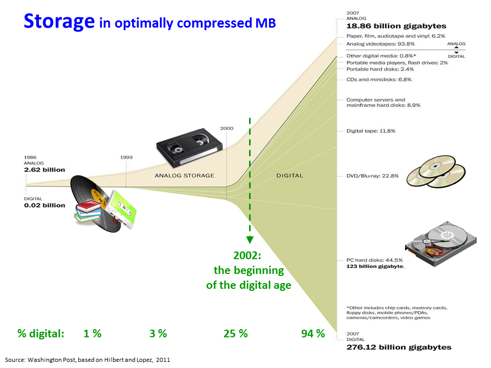
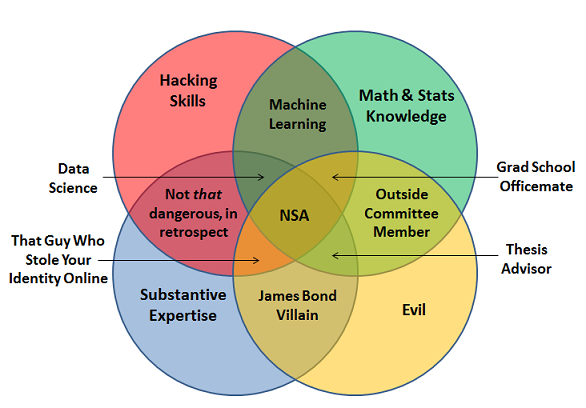

A Data Science Toolkit
Outfitting Production lines for Data Products
We'll probably want to build this out with names and logos and stuff
for 2014 MORS Symposium, WG {29, 33}
Introduction and Outline
- Why we care about Data Science
- Themes used throughout this presentation
- Describing the Industrial Data Flow
- Resources for your next steps
Why We Care About Data Science
- There's so much data!
- Confluence of disciplines
- Reproducibility
- Production of insights
Growth of Data
 Growth of Data[1]
Data Science Venn Diagram

Reproducibility
- Reproducibility vs Replicable
- Closest we can do with social data
- not completely scientific
- better than nothing
- Necessary for next set of data
- Do you need (or deserve) an API?
Data Process
- Reproducibility is much of what makes this a science
- Using the toolkit for end-to-end production of insights
- What we share should take us from raw data to final product
Presentation Themes
- Ecosystems of tools
- O'reilly/Strata Salary Survey, 2013 [2]
- Kaggle Competition Entries, 2012 [3]
- Process Steps
- CRISP-DM [4]
- Production Line
- Big Data
- This presentation is NOT//NOT about big data
- but, these tools are necessary for big data
- continuous repetition
- Team-oriented
- Process-aware specialists
- Area expertise
Statistics
- Right tool for the job
- Friends don't let friends use Excel for stats [5]
- Pick the ecosystem that's right for you
- OS Ecosystem:
- R, Python, Octave, ...
- $ Ecosystem:
- SAS/JMP, Matlab, Stata
- Windows Ecosystem: -R, Python, Tableau, NetworkX
source
Programming
- *nix environments (OSX, Linux)
- C/C++,
- R (RCPP)
- Python
- JavaScript (Node)
- Never seen anything done in ObjectiveC
- Windows
- C#
- VB.Net
Subject-Matter Expertise
- What to calculate, what it means
- Why Soft Skills Matter [7]
Process
- Acquire
- Clean
- Explore and Visualize
- Model and Analyze
- Products and Publications
Data Acquisition
- Data sources
- APIs
- Big data
- (that's the last time we talk about it)
- Provenance
- Keep a copy of the raw data
Sources
- Accessibility
- APIs
- Freedom
Big Data
- Flows
- Map-Reduce
- Importance of repeatable processes
- Documenting processes
- including cleaning the raw data
Provenance
- What have you got
- Where did it come from
- Where did they get it
Cleaning Data
- Standardization
- Missing values
Standardization
- Dealing with typos and differences
- Who worked on this briefing?
- CW Dillon
- Clarence W Dillon
- C. W. Dillion
- (FI {+ iff MI} + Levenstein distance < 3 in Lastname)
- Translating Units of Measure
Missing Values
- Filter out record with missing values
- Simulate missing values
- Replace with 0
Explore Data
- Exploratory statistics (summary stats)
- Exploratory visualization
- Volume (size and extent)
- Shape
Shape and Volume
- Format
- Open formats: CSV, TSV, XML
- Closed formats: .DTA, .SAS, .XLS(X)
- Shape
- Long, sparse
- Tabular, nested
Exploratory Viz
- Lattice
- Interactive
- ggplot2
Exploratory Stats
- Summary statistics
- Measures of central tendency
- Auto Regression
Problems with Summary Stats
Compare the whisker plots with jitters

Models & Analysis
- This is the 'secret sauce' for your data product
- Demonstrate the insight(s) from exploration and analysis
Regression
- What matters?
Fit
- Quality control
Product
- Reproducable research
- Sharing code & data
- PDFs of tables are cruel and thwart the cause of science
- PowerPoint is where data goes to die
- If you're product is good, it deserves an API
Reproducable research
- You care because you value your own time/data
- don't you?
- Share the code as well as the data
Data Products
- Think of this as the packaging step for manufactured products
- Documentation
APIs
- What
- Why
- How
- automated API tools
Resources for More Info
- Local University Education
- GW program
- GMU program
- UMUC program
- MOOCs
- Coursera
- OpenEdX
- Local
- DC2 (or your local Meetup)
- General Assembly
Conclusion
- Data Science is not just 'applied statistics'
- Reproduciblity (scripted processes)
- Subject-matter Expertise, aka Soft Skills
- Toolkits make Data Science scalable, extensible
- Insights are the value added (not just data munging)
- Team-oriented
References
Contacting Us
- Michael A Smith
- ICF, Int'l
- email...
- Clarence Dillon
- GMU & Complexity Studies
- studycomplexity.org